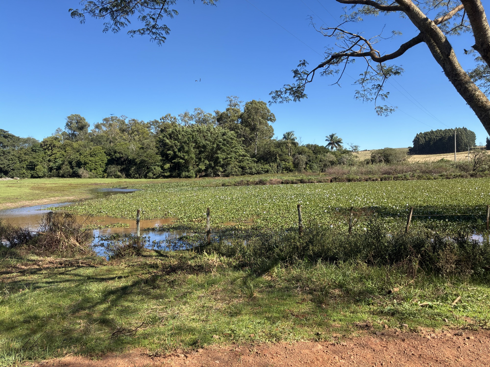
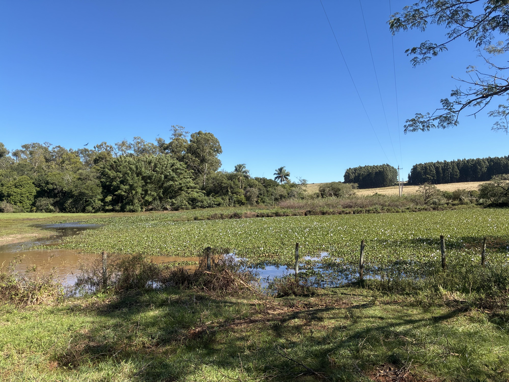
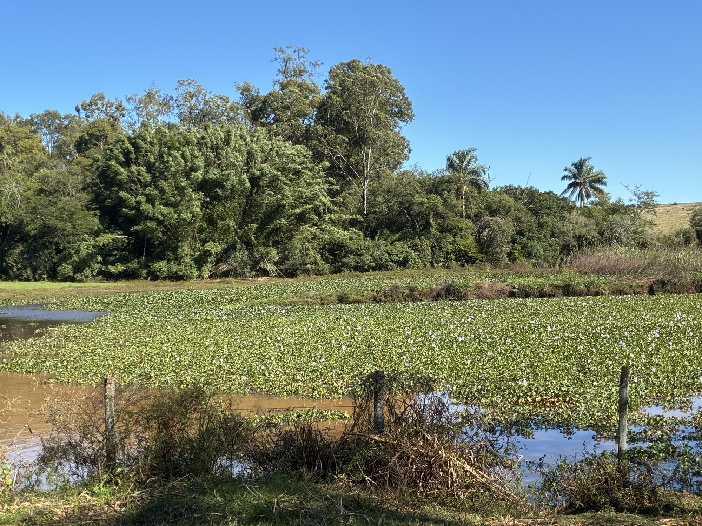
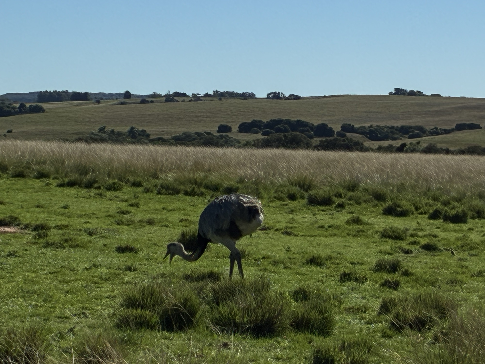

A Cascata
A queda d'água que dá nome à fazenda tem cerca de 10 metros e é considerada a maior da região, um espetáculo raro nos campos gaúchos.
A cascata, a lagoa em formato de coração e as formações rochosas que dão nome e fama à fazenda.
As belezas naturais da Fazenda da Cascata surpreendem quem espera apenas o campo plano do pampa. Aqui, a água e a pedra desenham um cenário único na região.
A queda d'água que dá nome à fazenda tem cerca de 10 metros e é considerada a maior da região, um espetáculo raro nos campos gaúchos.

Uma lagoa com contorno em forma de coração encanta os visitantes e emoldura a paisagem ao redor.

Torres e paredões de pedra lembram um pequeno cânion, contrastando com a vegetação aberta típica do pampa.

Parte do roteiro de turismo rural da região, a ponte de pedra soma-se ao conjunto de belezas naturais da propriedade.
Água, pedra e campo se encontram em poucos lugares como aqui. A combinação faz da Fazenda da Cascata um destino de turismo rural procurado por quem quer redescobrir as belezas naturais de Alegrete.
Ver as paisagens